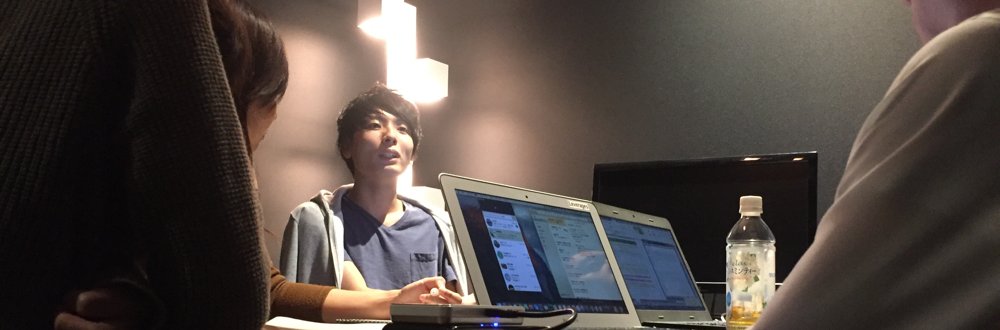
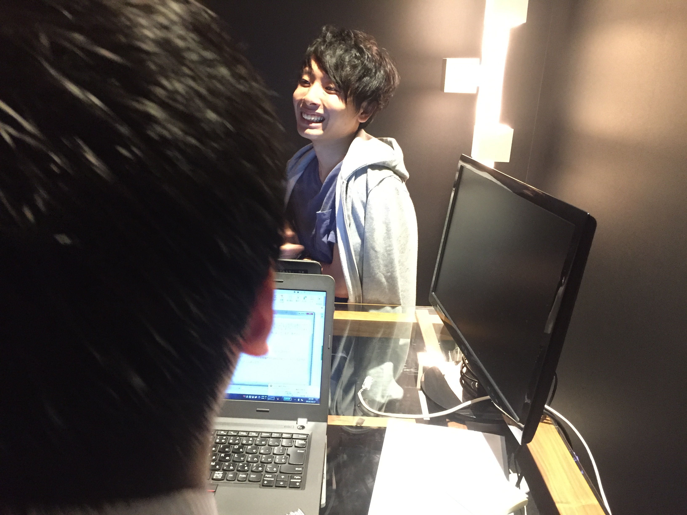
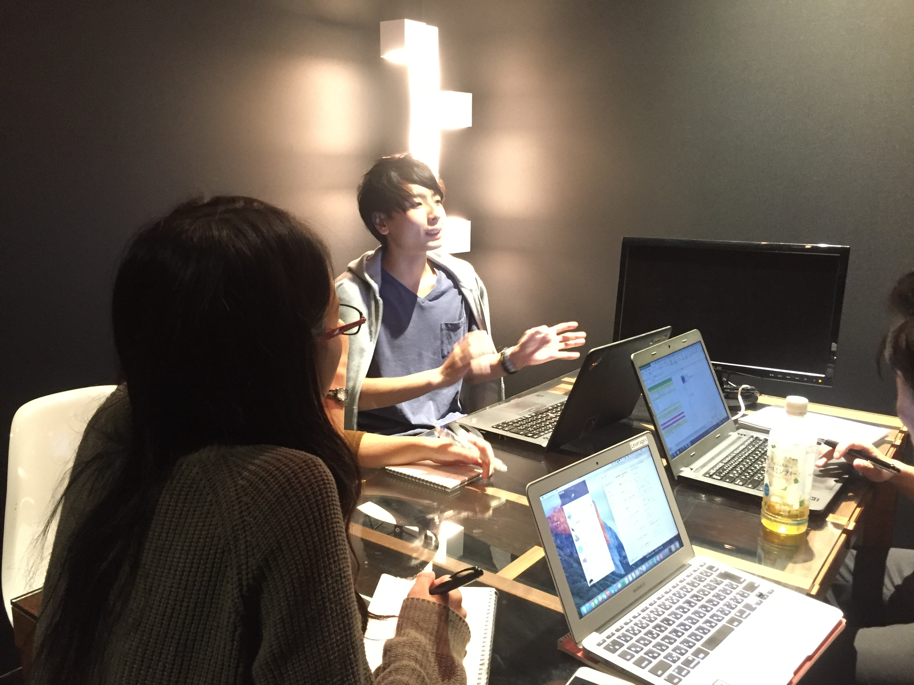
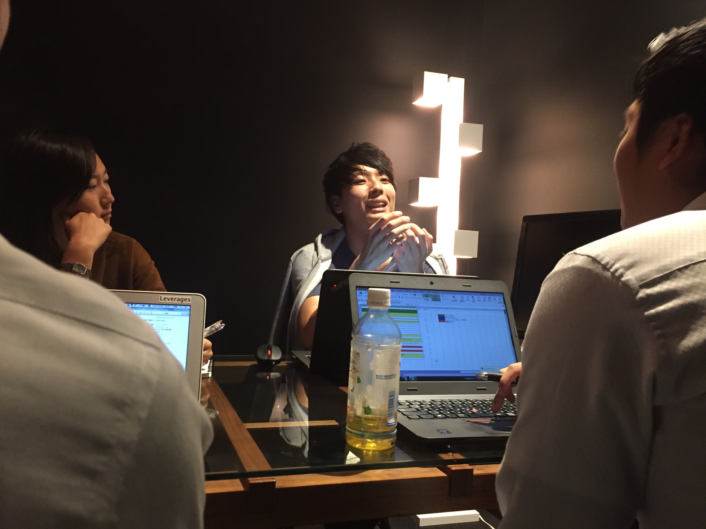
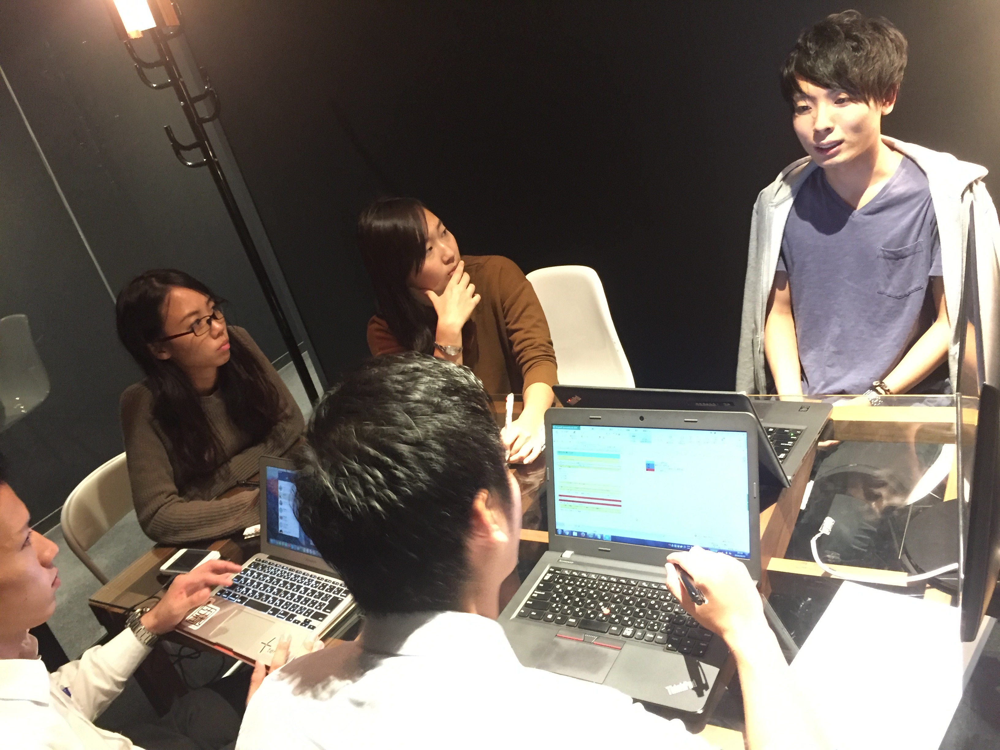

こんにちは。大阪支店でインターン中のレバレジーズキャリア内定者のソウです。
今週からなんと8週連続で大阪支店の社員さんのインタビュー記事を配信していきます！！！！！
まずはこの企画のチームメンバーを紹介！！！
プロテインならなんでも聞いてくれ、管理栄養士ドイちゃん！
誘われればどこにでもついていきます、フットワークおばけカクちゃん！
ペルーと日本のハーフですがなにか、架電数の鬼エリカ！
そして私、薬物はしてません、成宮くんに似ている奥村です！！
本日はまず、メディカル事業部新卒TOP営業マンさわやかイケメンの青木大輔さんに突撃してきました！
 青木 大輔さん / Daisuke Aoki
青木 大輔さん / Daisuke Aoki
2016年4月入社
大学在学中にベンチャー企業にて３年間の営業を経験し、
今年度よりレバレジーズに入社。
新卒研修中でトップの営業成績を残し、期待の新人として現在レバレジーズメディカル事業部大阪支店にてキャリアアドバイザーを担当。
業務外では支店のフットサル部を回している

ー本日はよろしくお願いします。ではまずは青木さんのパーソナティーを知りたいと思っています。
ー青木さんは仕事以外では普段どんなことをされているのですか？
休みの日はだいたい土曜日とかには仕事来てるか、仕事なかったら友達と遊んでるかのどっちかですね。
買い物とかはあまりいく方ではなくて、夜に友達と遊んでいます。基本的に飲んでますね（笑）
ーちなみにですが好きな映画、書籍のなどを教えてください。
好きな映画はブラッドピット主演のファイトクラブですね。
他では、結構アクション映画が好きで、キングスマンっていうイギリスの映画には最近ハマってますね。
他には親子愛を描いたリアルスティールとか。
書籍に関しては、『入社一年目の教科書』です！
本は読むものの同じ本ばかり読むので、この本は一年くらい前から読み始めて、何度も繰り返し読んでいます。
人付き合い、仕事へのマインドセット、新人だけでなく社会人全般に求められる業務への取り組み方に関してなどが書かれていて、
私のバイブルのようにしてますね。
今更ですが、やはり本は仕事のためだけでなく、普段の生活を豊かにしてくれますよね
もちろん仕事ででもですが、プライベートでもふと読んだことが話のネタになったり、役立ったりするので。
内定者のみなさん向けに岩槻さんのオススメの書籍リストが届いていると思うので、どんどん本を読んでいってくださいね。
ーちなみになんですが、青木さんには憧れの人はいらっしゃいますか？
二人いますね。一人は父親で、もう一人は本田圭佑です。
父親は憧れというよりもロールモデルなんですが。
忍耐力がすごくある点ですね。私の実家は自営業をやっていて、
父親は家族を持ちながら、10年という長い年月のをかけて事業を軌道に乗せました。
この話は、大学に入った時に知ったことなのですが、それを聞いた時は、
10年間も一途に事業を軌道に乗せることに徹していた父親に感動をお覚えましたね。
また、本田圭佑は、純粋に好きです（笑）
あれだけリスクあることを人前に立って言えるところがすごい（笑）
そもそも人に嫌われたくないとかいう感情とかに邪魔されないというか。
中学校の時から挫折の繰り返しの人生だったらしく、それに打ち勝って来た逆境力があるなって思っていますね。
できる人の共通点なのかもしれないですけど、逆境力って。
爆速で同年代から頭一つ抜けるためのキャリア選択

ー話は変わりますが、なぜレバを選ばれたんですか？
まず、そもそもベンチャーを中心にみていたのですが、
その理由はまず、2０代のうちに他の同年代の人たちよりも市場価値の高いビジネスパーソンになっておくには、
急成長しているベンチャー企業で働きたいって思いがあったのが一つです。
何故なら、20代のうちに、他の新卒の人たちから頭一つ抜けるためには、それなりの成長をしないといけない、
となると成長している会社で成長しているノウハウを身につける必要があると思って、
急成長している企業っていうのを一軸としてもっていました。
あと、業界ですが最初から人材をやりたいと思っていました。ですが、それも多角的な領域での人材です。
人材をやりたいと思ったきっかけが、自分が人に影響されやすい人間でして、
大学生のときに自分を変えてくれた人とか、自分に新しい気づきを与えてくれた人を思い返してみると、
その人たちってやっぱり他の人とは何かが違っていて、人への影響力がすごい人たちばっかりだったんですね。
そこで、私も人に何か影響を与えられるようになりたいという目標ができました。
じゃあ人に影響を与えられる人ってどんな人だろって考えた時、その人たちの共通点て、様々な経験していることだったんです。
その人たちは、1つの会社に縛られないような、今で言うベンチャー色の強い人たちです（笑）
多角的な領域での人材と言ったのは、その人たちに並べるような自分のキャリアを描いてみたときに、
例えば1つの領域で人材に特化してる業界で働いてしまうと、自分の将来のキャリアの幅が狭まってしまうリスクがある。
それってとても怖い子どで怖いことで、そういう理由があって、多角的な事業を展開していて、
かつ業績を伸ばしている会社の方が、キャリアに幅ができるとお思ったんです。
いわゆるリスクヘッジみたいなものです。
ちなみにですが、ほんとはリクルートも受けたかったんです（笑）
ただ、募集の時期にちょうど海外旅行に行っていて、その間にウェブテストの期限が終わってました（笑）大きなミス（笑）
もし間に合っていたらマネジメントソリューションズを受けたかったのですが、、、
でも結果だけ見ればレバで本当によかったと思っています。
青木さんにとって仕事のできる人とは

ー青木さんにとって仕事ができる人ってどんな人ですか？
また、青木さんが誰にも負けないポイントはなんだと思いますか？
高橋悠人さんがその私の例なのですが、仕事ができる人は、感情察知能力に長けている人だと思いますね。
例えば、その人の表情や話しているトーンなどから、
その人がどう言った心境でその話をしているのかをそれだけ深く感知できるか。
その能力がずば抜けてる人は本当に仕事ができると思います。
ですが感情察知能力は意図的に身につけられるものではないと思うので、こればかりは身につけようがないですね（笑）
あと、自分の負けないポイントは、人を模倣することです。それに尽きます。
もちろん自分の頭で考えることは大切ですが、新卒なのでまずは独自性をいきなり発揮するというより、
とりあえず仕事のできる人を模倣してそれを自分に落とし込んで再現性をもたせることが
最初は大事なんじゃないかなって思います。
なので、ある程度の能力に到達してから自分の独自性を持ってやって行くことが、
成長の最短ルートなんじゃないかなと思いますね。
だから今でも人の日報を読んだり、ログを見てどんな話をしていたかをチェックしたり、
モニタリングとかをするようにしています！最初は同期のモニタリングもしてましたね（笑）
やっぱり、事業部全体で共有されているようなナレッジって、氷山の一角的なもので
、言語化されてない感覚的なものであったりとか、
そういうノウハウは自分で見て聞いて自分で学ぶ必要があると思います。
好きなことをさせてくれた親への恩返しが恩返しがしたい

ーそんな青木さんの今後の目標と人生の夢について教えてください！
直近の目標は、1年半以内で事業部の中でリーダーになることです。
なんで1年半かというと、それがメディカル事業部の新卒リーダーの最短記録だからです。
リーダーになりたい理由は単純で、今より一つ上の視点で事業を見てみることで自分の視野を広げたいからです。
だからまずはリーダーになりたい！
そして、人生の目標ですが、父親と母親に恩返しをすることですね。
父親と母親に幸せを届けたいです（笑）
私が今まで生きてきた24年間、両親は私がやりたいことに対していつも反対をせず、肯定して意見を聞いてくれました。
休学を決めたこともなにも言わずに認めてくれました。
それってすごく恵まれた環境で育ったと思っていて、すごく自由にさせてくれました。
自分にとってはとてもありがたいことで、本当に感謝しています。
ですので、まずはお母さんにはブランドものをあげます。ブランドものが好きなので（笑）
お父さんは旅行好きなので、旅行に連れて行ってあげたいですね。
ずっと自営業で家にいるから海外に連れて言ってあげたいなと。
ーすてきな夢ですね！では最後にインターン生に1言お願いしますお願いします！
そうですね。同期を大切にしてください。
こういう質問をするとこの答え正直多くないですか？（笑）
最初私はいつも、うっさいねん！って思ってました（笑）
でもこの時期になって思うのが、同期いてよかったなってことですね。
入社した頃、私はけっこうずけずけ言うタイプだったので、同期からは嫌われていました。
その時は同期に嫌われるくらいどうでもいいわっていう感じでした。
でもそれから2、3ヶ月経ってからですが一緒に仕事するようになり、
飲みに行ったり、悩みや納得いかないことがあった時に話を聞いてくれたり、
切磋琢磨して高め合ってくれるライバルになるのはいつも同期で、それでやっと気づいたんです。
本当に同期がいてよかったなって。（笑）
なので、私からもうるさいようですが、
同期を大切にしてください！！！
ー青木さん本日は本当にありがとうございました!